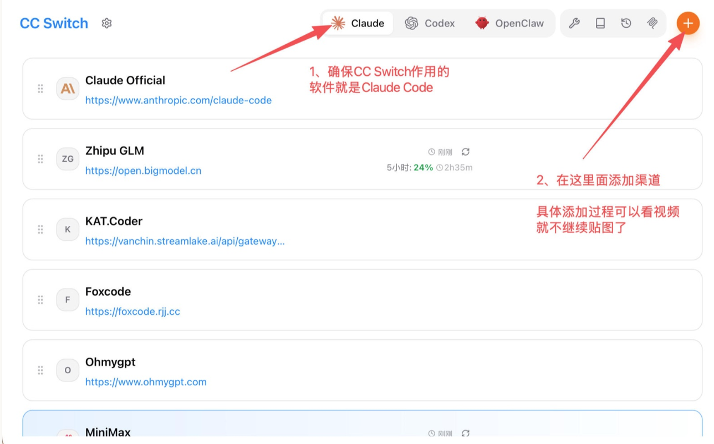
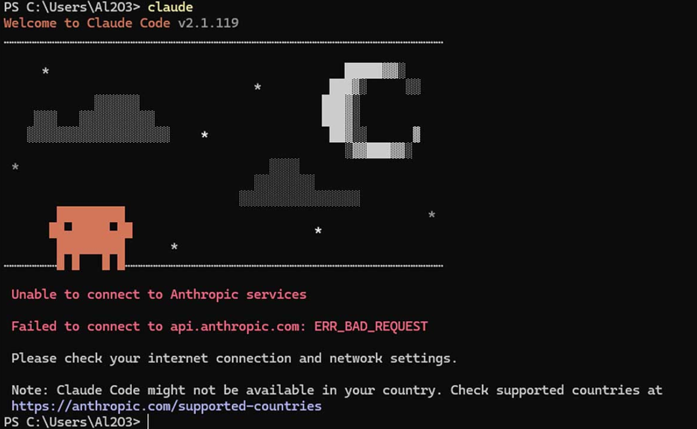

面向普通用户的 Claude Code 安装与模型接入指南。
Claude Code 原生是为 Linux / macOS 设计的，而 Windows 系统命令不同，所以需要装 Git 来进行一个准备工作。
下载安装包，安装时狂点下一步就行。
https://pan.baidu.com/s/1-naLHQ0ke_2Xru__efY3TQ 提取码：chzshttps://pan.baidu.com/s/1pBAbJhENfm05jGPAtgm_-w 提取码：chzs备用：也可从Git 官网下载
打开终端（Windows 用 PowerShell，Mac/Linux 用 Terminal），粘贴命令即可：
安装 2.1.153 老版本命令：
备用：官方原版命令 irm https://claude.ai/install.ps1 | iex
安装 2.1.153 老版本命令：
备用：官方原版命令 curl -fsSL https://claude.ai/install.sh | sh
因为 2.1.156 版本使用第三方 API 存在兼容性问题，建议回退 153 版本。
整个过程会下载一个 200+MB 的软件，取决于个人的网络状态，时间可能会很长。
本页面提供的 Claude Code Windows 安装脚本（cc.ps1） 用于自动化安装流程。作者不提供代理、中转或文件托管服务。具体的脚本内容已开源，放在 GitHub 上面可公开查看。
latest / manifest.json），并在本地执行安装。storage.googleapis.com 及相关官方地址。使用本脚本即表示您已阅读并同意： 请自行评估网络、系统与数据环境，并遵守所在地法律法规。使用过程中产生的设备、数据、账号或其他结果，由使用者自行承担。
把 C:\Users\你的用户名\.local\bin\ 加到用户级 PATH。
点开开始菜单，输入环境变量，点"编辑系统环境变量"。
在窗口下面点"环境变量"，在系统环境变量里找到 Path，双击它。
新建一条，把 C:\Users\你的用户名\.local\bin\ 复制进去。
Mac / Linux 的安装脚本一般会自动配置 PATH。
先试试关掉当前终端，重开一个新的输入 claude。
然后还是找不到命令，手动把以下内容加到你的 shell 配置文件中：
加到 ~/.bashrc 或 ~/.zshrc，然后执行 source ~/.zshrc 生效。
软件装好了，但还没有 AI 模型可用。这时候需要 cc-switch ，它可以切换不同的 AI 模型提供商。
智谱 GLM、MiniMax、Kimi、DeepSeek 等
Claude、GPT 等模型可通过 API 服务 接入。
https://pan.baidu.com/s/1sUklylI_bTkV7QL1a7Wy1g 提取码：chzshttps://pan.baidu.com/s/1qTTHp1DstqaA52d-oaWxHQ 提取码：chzs新版本发布时可从 GitHub Releases 获取更新

安装完成后，以智谱 GLM 为例，在 cc-switch 选择 Claude 图标（默认是第一个），然后添加渠道，填入密钥，指定模型名称，最后启用。回到终端输入 claude 就可以直接开始对话了。

原因： CC Switch 的作用就是一键修改 Claude Code 的配置文件，但 Claude Code 在首次运行时如果没有通过检测，会直接忽略你自定义的 API 地址，还是会去强行连接官方做登录检查。
直接在终端运行以下命令，向 .claude.json 写入"已完成初始化"的标识：
macOS / Linux：
Windows：
打开这个文件，比如 C:\Users\admin\.claude.json。这个路径里的用户名部分每个人都不一样，看你自己的用户名是什么。
它默认可能是隐藏的，你需要在文件管理器上面勾选一下显示隐藏的文件。如果你的电脑上直接没有这个文件，那就新建一个也可以。
然后把这个内容复制进去："hasCompletedOnboarding": true,
保存文件，确保 CC Switch 已经切换到你自己的渠道后，重启你的 Claude Code。如果你的格式会报错，比如多了一个引号、括号或句号，可以把文件里的内容全选复制，发给任意一个网页版 AI，让它只修复格式、保留原有内容，然后把结果重新粘贴回来。
先进入你要工作的文件夹，再输入 claude。右键文件夹用终端打开最快；如果右键没有，就先打开终端，再用 cd + 文件夹路径 进入工作目录。
用同样的方式回到这个工作目录，仍然先启动 claude，然后在对话框内输入 /resume，就可以选择曾经在这个工作目录中的各种历史会话，回车即可恢复选中的会话了。
聊满的时候，Claude Code 会自动压缩；随时可以输入 /context 来查看当前会话的上下文占用情况。或者你担心自动压缩来得猝不及防，你也可以手动输入 /compact。压缩次数越多，越早期的内容越容易失真。
因为终端里的输入和输出都是文字，AI 处理文字最快。它可以直接读文件、改文件、运行命令，所以你可以用它写代码、排查问题、处理项目文件。
官方目前更推荐原生安装方式，本教程采用的也是这种方式。正常卸载方式：打开设置 > 应用 > 已安装的应用，搜索"Claude Code"，点击三个点，然后选择卸载。
以管理员身份打开 PowerShell（普通 PowerShell 也可以），逐行运行：
继续运行以下命令，删除用户配置目录，防止残留配置影响重装：
注意：删除 ~/.claude 会清除所有 Claude Code 的设置、自定义工具、MCP 服务器和会话历史。以后还想继续使用这些内容，建议先备份这个文件夹。
运行下面命令检查：
如果提示「command not found」或类似错误，就说明已经卸载成功。也可以用 where claude 查看是否还有残留路径。
当前版本采用手动更新方式。想更新时，重新运行一次安装命令即可。